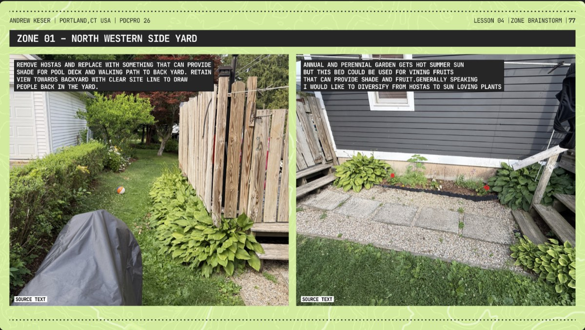
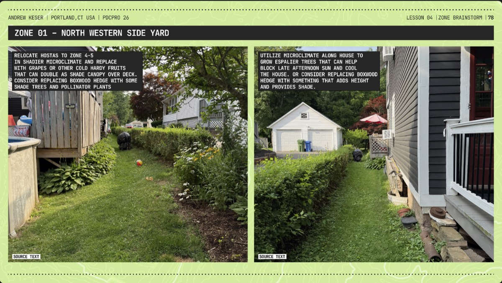
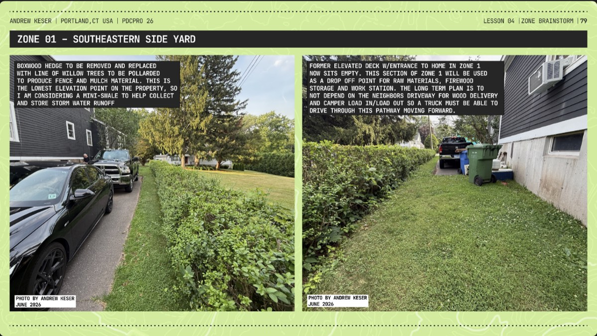
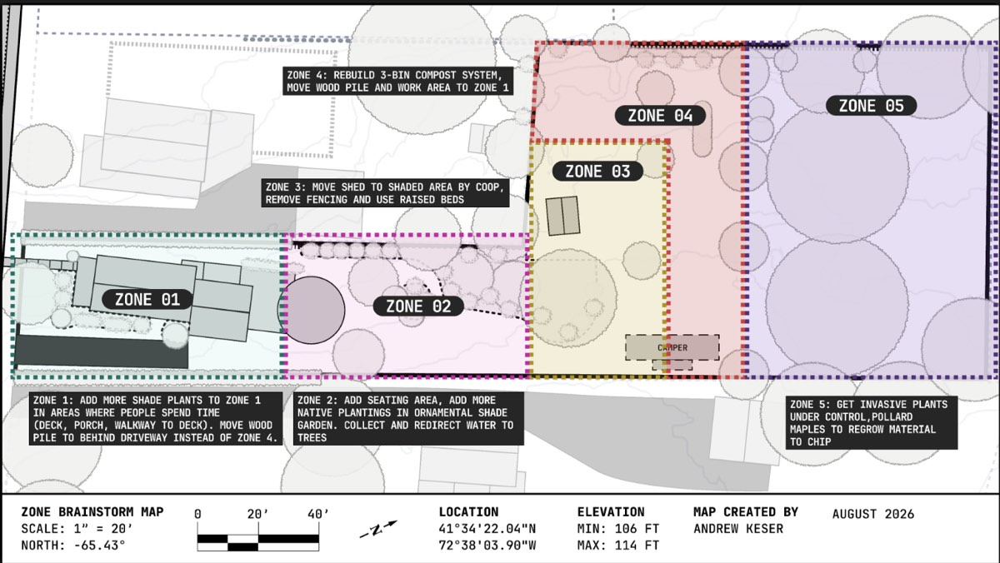

Proposed changes to the current zone layout — an exploratory brainstorm, not committed design decisions. Feeds the Mid-Term Site Water Design Brainstorm.
Review your client must/nice/avoid list. How might you consider changing the zone layout to meet these needs?
The overall layout can remain the same, but the ways we use them can be done more effectively so they align to current use patterns. For example, adding a seating area in the already shaded gardens of Zone 02 could offer another gathering space with good views similar to the front porch in Zone 01.
How can you place elements in proximity to other elements to improve efficiency based on location?
Reducing the distance between the house and the wood pile is a clear opportunity after this analysis. The wood pile can be moved to be next to the south eastern side of the house in Zone 01 instead of being all the way out in Zone 04. Now wood can be dropped off in our driveway, instead of down the adjacent neighbors' driveway where it has to be hauled back up to the house for burning.
How does the site's slope and aspect influence the zoning?
The lot is a gentle slope with a max elevation of 114 ft and min of 106 ft. This impacts the direction of water run off but other than that, it doesn't dictate views or paths people take. The lot is much longer than it is wide and the slope is not really noticeable unless you are actively measuring it.
What client elements might be best placed on the edge between two zones?
The edges between Zone 02 and Zones 01 and 03 have the most opportunities to expand upon what's already there or where people are already walking through or visiting. My goal is to draw people through the yard from Zone 01 through Zone 04 which can be done by placing pathways, seating areas and clearings to draw the eye towards the back of the property.
Are there areas of the site that are far from the house that are visited frequently?
Far from the house is a relatively short distance given the lot is .43 acres total, but in a practical sense, Zones 4 & 5 don't require daily visits for chores or active use, but it's fairly easy to notice something out of place in those zones while standing in Zone 3. We also recently installed game cameras to track the movement of animals on the property which gives us instant access to Zones 4 & 5 from anywhere.
Do you have ideas for ways to save energy, time, and resources by adjusting the current zones?
The zones will likely remain as is, but what we do within each will be adapted to amplify what's already happening. For example, Zone 02 is already used daily, but since it lacks proper seating or gathering space, there's no real reason to stay there since you're likely passing through to Zone 03. Moving the wood pile and work station closer to the house will help reduce how much transporting needs to be done. Zones 4 and 5 already have mature trees growing and producing material to mulch or chip, so I want to encourage that more to keep a steady supply of wood chips and mulch.

Remove hostas and replace with something that can provide shade for pool deck and walking path to back yard. Retain view towards backyard with clear site line to draw people back in the yard.
Annual and perennial garden gets hot summer sun but this bed could be used for vining fruits that can provide shade and fruit. Generally speaking I would like to diversify from hostas to sun loving plants.

Relocate hostas to Zone 4-5 in shadier microclimate and replace with grapes or other cold hardy fruits that can double as shade canopy over deck. Consider replacing boxwood hedge with some shade trees and pollinator plants.
Utilize microclimate along house to grow espalier trees that can help block late afternoon sun and cool the house. Or consider replacing boxwood hedge with something that adds height and provides shade.

Boxwood hedge to be removed and replaced with line of willow trees to be pollarded to produce fence and mulch material. This is the lowest elevation point on the property, so I am considering a mini-swale to help collect and store storm water runoff.
Former elevated deck w/entrance to home in Zone 1 now sits empty. This section of Zone 1 will be used as a drop off point for raw materials, firewood storage and work station. The long term plan is to not depend on the adjacent neighbors' driveway for wood delivery and camper load in/load out, so a truck must be able to drive through this pathway moving forward.
Photos by Andrew Keser, June 2026.

Zones Brainstorm Map — scale 1" = 20', north -65.43°, location 41°34'22.04"N 72°38'03.90"W, elevation min 106 ft / max 114 ft.
Map created by Andrew Keser, August 2026.
| Zone | Proposed change |
|---|---|
| Zone 1 | Add more shade plants to Zone 1 in areas where people spend time (deck, porch, walkway to deck). Move wood pile to behind driveway instead of Zone 4. |
| Zone 2 | Add seating area, add more native plantings in ornamental shade garden. Collect and redirect water to trees. |
| Zone 3 | Move shed to shaded area by coop, remove fencing and use raised beds. |
| Zone 4 | Rebuild 3-bin compost system, move wood pile and work area to Zone 1. |
| Zone 5 | Get invasive plants under control, pollard maples to regrow material to chip. |
Same row structure as the Current Zones existing-conditions matrix — read them side by side.
| Zone 01 | Zone 02 | Zone 03 | Zone 04 | Zone 05 | |
|---|---|---|---|---|---|
| Frequency of visits | Daily | Daily | Daily | Monthly | Monthly |
| Theme / active primary | Plantings provide shade, fruits, herbs and flowers to attract birds | Stop and sit or pass through | Veg garden | Fruit, berry, hops yield | Mimic nature, build habitat |
| Water | Water spigot on southeast side of house by driveway | Hose in Zone 01 reaches Zone 02 | Buried hose from Zone 01 runs to Zone 03 but needs repair to avoid leak | Need to capture and direct water around trees for heavy rain events | No water access |
| Structures | No new structures | Small water feature, shaded seating | Build new shed & relocate within zone | Build new compost system | No structures |
| Plants / plant systems | Guilds of native mixed perennials | Decorative shade trees and flowering shrubs | Primary veg garden in raised beds | Dwarf fruit tree orchard, shrubs and hop vines | Mature oaks, maples & spruce trees |
| Animals | Attract wild song birds & small mammals | Wild song birds & small mammals | Keep chickens in Zone 03, protect against predators | Provide habitat for animals & insects | Provide habitat for animals & insects |
| Additional considerations | Least flexibility in terms of what can change aside from plantings | Add shade cover so gathering areas aren't so hot in summer afternoons | This zone will likely change the most with clean up projects this fall | Mulch the lawn in this area and fully commit to orchard production | This area is undergoing treatment to remove poison ivy & bittersweet |